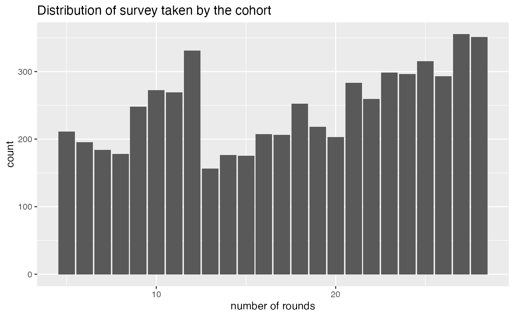
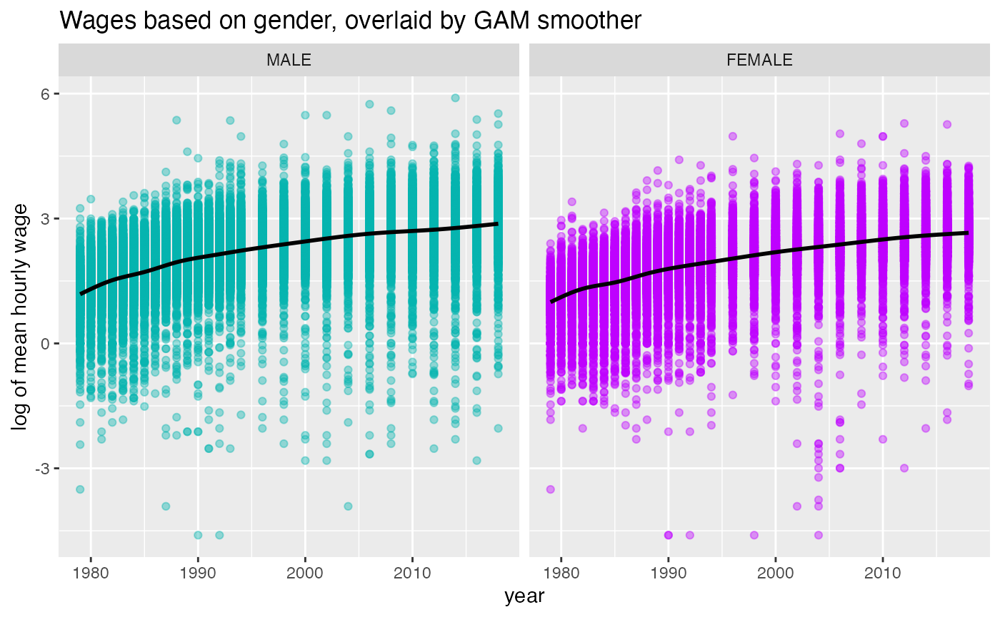
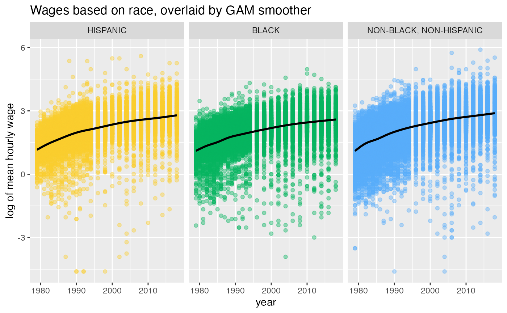
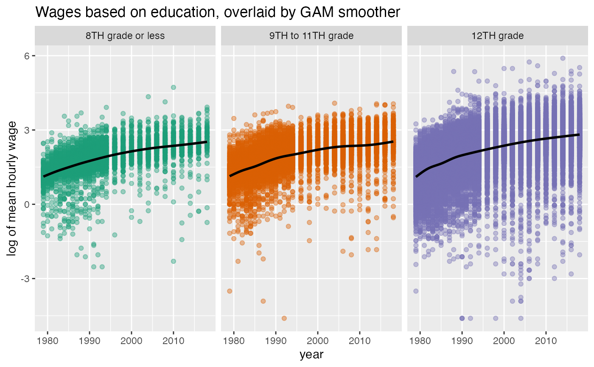

yowie (Years Of Wages to Investigate and Explore) is an R data package that contains three datasets from the National Longitudinal Survey of Youth (NLSY79) from Round 1 (the survey year 1979) to Round 28 (the survey year 2018). Those three data sets are:
wages: A tsibble contains longitudinal wages data and several demographics variables from the cohort whose highest grade completed are up to 12th grade.wages_hs_do: The subset of wages_hs that only contains male high school dropouts. This data adopts the wages data in Applied Longitudinal Data Analysis (Singer and Willett, 2003).demog_nlsy79: A tibble contains demographic data of the NLSY79 cohort.As its name, the wages data in this package could be used to do exploratory data analysis, particularly in longitudinal data analysis. Hence, these datasets could be useful for education (learning and teaching statistics and data science) and research. This vignette will be divided into two sections. Section 1 will explore the demographic profiles of wages_hs. Section 2 will provide minimal examples of wages_hs visualisation using ggplot2.
Understanding the demographic profile of the sample is important before exploring the data and extracting insight from it. The demog_nlsy79 data contains all of the NLSY79 cohort demographic profiles. The wages data contains a subset of the respondents’ longitudinal profiles. Only respondents who reported at least 5 times and with some levels of high school education but not further studies. In this section, we will explore the demographic profile of this subset.
library(yowie)
#> Warning: package 'tsibble' was built under R version 4.0.2
library(ggplot2)
library(forcats)
#> Warning: package 'forcats' was built under R version 4.0.2
library(janitor)
#> Warning: package 'janitor' was built under R version 4.0.2
library(kableExtra)
#> Warning: package 'kableExtra' was built under R version 4.0.2
library(dplyr)
#> Warning: package 'dplyr' was built under R version 4.0.2
# subset demog_nlsy79 who only included in wages
wages_hs_demog <- filter(demog_nlsy79, id %in% wages$id)
# create cross tabulations from demographic data
gender_race_table <- wages_hs_demog %>%
tabyl(gender, race) %>%
adorn_totals(c("row", "col")) %>%
adorn_percentages("row") %>%
adorn_pct_formatting(digits = 2) %>%
adorn_ns(position = "front") %>%
mutate(gender = ifelse(gender == "MALE", "Male",
ifelse(gender == "FEMALE", "Female", "Total")))
# styling the table
kable(gender_race_table,
caption = "Gender and Race Distribution of the NLSY79 Samples",
col.names = c("Gender", "Hispanic", "Black", "Non-Black, Non-Hispanic", "Total")) %>%
kable_styling(latex_options = "striped") %>%
add_header_above(c(" " = 1, "Race" = 3, " " = 1))| Gender | Hispanic | Black | Non-Black, Non-Hispanic | Total |
|---|---|---|---|---|
| Male | 595 (18.04%) | 925 (28.04%) | 1779 (53.93%) | 3299 (100.00%) |
| Female | 464 (17.63%) | 633 (24.05%) | 1535 (58.32%) | 2632 (100.00%) |
| Total | 1059 (17.86%) | 1558 (26.27%) | 3314 (55.88%) | 5931 (100.00%) |
There are more males as well as non-black and non-hispanic in the wages_hs. It is also worth noting that sample participated in the survey in various rounds. Most samples participated in 27 rounds of surveys.
# count the number of rounds that every id taken
wages_hs_df <- as_tibble(wages) %>%
group_by(id) %>%
count()
# create the bar plot
wages_hs_df %>%
ggplot(aes(x = n)) +
geom_bar() +
xlab("number of rounds") +
ggtitle("Distribution of survey taken by the cohort")
This section shows the examples of wages_hs visualisation data based on gender, race, and education level using ggplot2.
Note: The data contains two demographics, gender and race, which needs special attention. Gender is as reported in the data and only has two categories, which is recognised today as inadequate. Gender is not binary. Race is as reported in the database, and when doing analysis with this variable, one should keep in mind that the purpose is to study racism rather than race.
ggplot(wages, aes(x = year, y = log(wage), color = gender)) +
geom_point(alpha = 0.4) +
geom_smooth(color = "black") +
facet_wrap(~gender) +
scale_color_manual(values = c("#04B4AE", "#BF00FF")) +
theme(legend.position = "none") +
ggtitle("Wages based on gender, overlaid by GAM smoother") +
ylab("log of mean hourly wage")
The plot above implies that the wages experience a positive trend in both males and females. However, males tend to earn more than females. In the following example, mean hourly wage (logged) is plotted against the race. We can see that the association between year and wages in the three race groups is pretty similar with non-black,non-hispanic has a slightly higher slope compared to hispanic and black.
ggplot(wages, aes(x = year, y = log(wage), color = race)) +
geom_point(alpha = 0.4) +
geom_smooth(color = "black", se = TRUE) +
facet_wrap(~race) +
scale_color_manual(values = c("#FACC2E", "#04B45F", "#58ACFA")) +
theme(legend.position = "none") +
ggtitle("Wages based on race, overlaid by GAM smoother") +
ylab("log of mean hourly wage")
Lastly, the following plot shows that the three levels of highest education complete have a generally increasing trend of wages. However, in 2008-2010, respondent who completed 9th to 11th grade experience a flat trend. Also, the slope of GAM smoother in 12th grade group is higher compared to the other groups.
# collapse the hgc into new levels
wages_hgc_new <- wages %>%
mutate(hgc_regroup = fct_collapse(hgc, `ungraded` = "UNGRADED",
`8TH grade or less` = c("1ST GRADE", "3RD GRADE",
"4TH GRADE", "5TH GRADE",
"6TH GRADE", "7TH GRADE",
"8TH GRADE"),
`9TH to 11TH grade` = c("9TH GRADE",
"10TH GRADE",
"11TH GRADE"),
`12TH grade` = "12TH GRADE")) %>%
filter(hgc_regroup != "ungraded") %>%
mutate(hgc_regroup = factor(hgc_regroup, levels = c("ungraded", "8TH grade or less", "9TH to 11TH grade", "12TH grade")))
# create the plot of wages vs year facet by education
ggplot(wages_hgc_new, aes(x = year, y = log(wage), color = hgc_regroup)) +
geom_point(alpha = 0.4) +
geom_smooth(color = "black", se = TRUE) +
scale_colour_brewer("", palette="Dark2") +
facet_wrap(~hgc_regroup) +
theme(legend.position = "none") +
ggtitle("Wages based on education, overlaid by GAM smoother") +
ylab("log of mean hourly wage")
More examples of data exploration and the data cleaning process from the NLSY79 database to this package would be made available soon.
Singer, Judith D, & Willett, John B. (2003). Applied longitudinal data analysis. Oxford Univ. Pr.
The U.S. Bureau of Labor Statistics. (2021, January 6). National Longitudinal Survey of Youth 1979. https://www.nlsinfo.org/content/cohorts/nlsy79/get-data